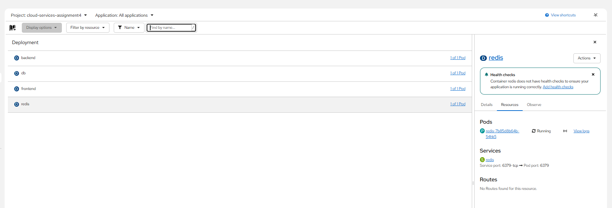
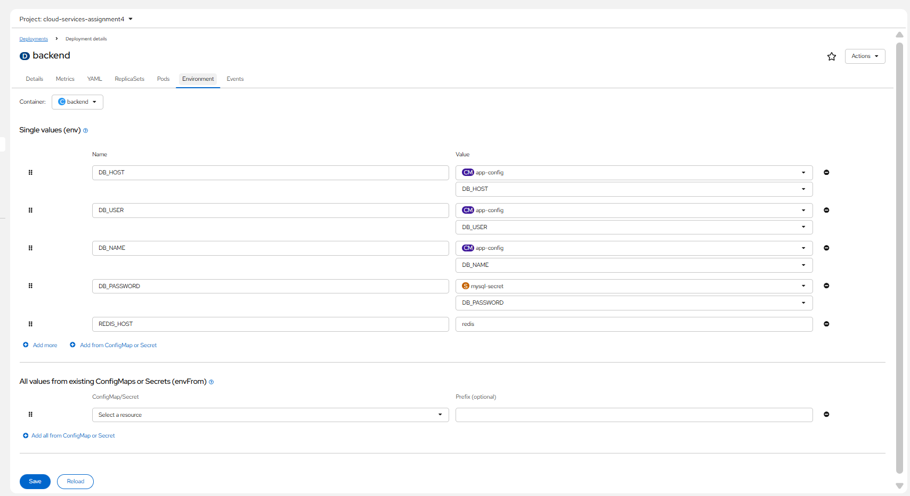
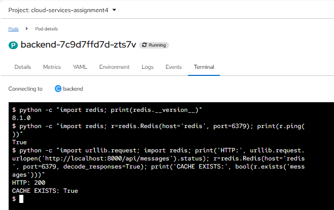
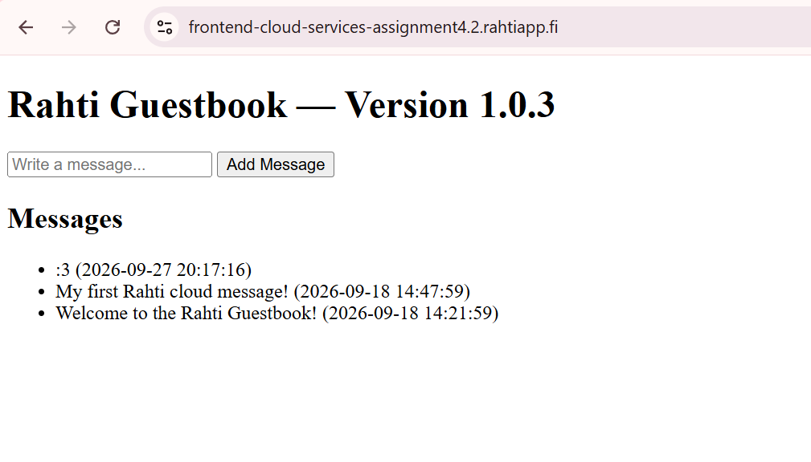
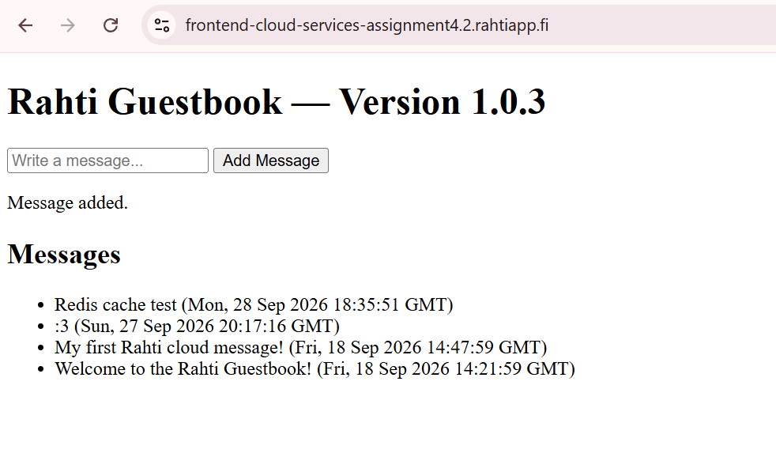
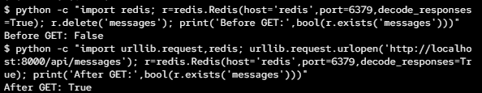
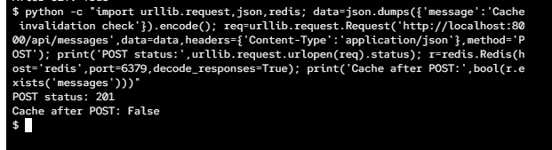
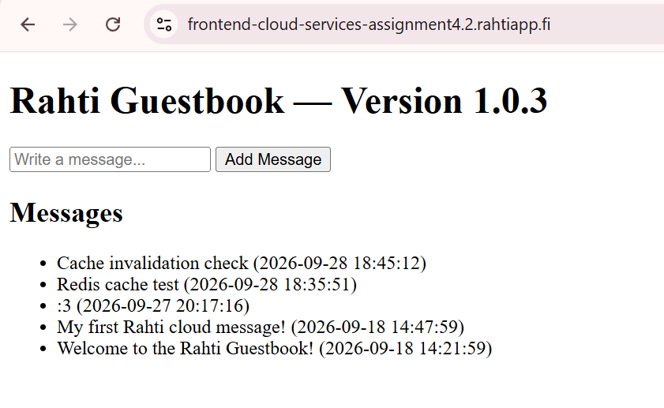

Prepared by Zainab Fatima
This documentation covers the theory questions and the practical work completed during Week 5. For the practical part, I added Redis caching to the backend of the LEMP guestbook application from Week 4.
SAML and OAuth are both used when applications need to work with users and access to services, but they are used for different purposes. SAML is mainly used for authentication and single sign-on, while OAuth is mainly used for authorization.
SAML stands for Security Assertion Markup Language. It is commonly used for single sign-on (SSO). This means that a user can log in through an identity provider and then access another application without having to log in again. For example, a company could have one identity provider for its employees and use it to give them access to several internal applications.
OAuth is mainly about giving an application permission to access something without giving the application the user's password. For example, an application could ask for permission to access certain information from a user's Google account. If the user agrees, the application receives an access token that can be used for the permissions that were given.
A simple way to remember the difference is that SAML is commonly used to handle logging a user into an application, while OAuth is mainly used when an application needs permission to access another service. OAuth is also often used together with OpenID Connect when an application needs user authentication.
For a company, the choice depends on what they need. SAML can be useful for enterprise applications where employees need single sign-on through the company's existing identity provider. OAuth is useful when an application needs to access another service or API on behalf of a user. For example, if I added login through an external provider to my Week 4 guestbook, an OAuth-based solution could be one possible approach.
A Web Application Firewall, or WAF, is a security layer that checks HTTP and HTTPS traffic going to a web application. It can identify requests that look like known attacks and block them before they reach the application.
A WAF can help protect against attacks such as SQL injection and cross-site scripting (XSS). It can also inspect things such as URLs, request parameters, headers and request bodies to look for suspicious requests.
In my Week 4 application, the frontend is public while the backend and database are internal services. The basic architecture is:
Internet | v Route | v Frontend | v Backend | v Database
A WAF could be placed in front of the public part of the application so that web traffic is checked before it reaches the application. The exact location would depend on the cloud platform and how the WAF is implemented. The main idea is that unwanted or suspicious web requests can be filtered before they reach the application.
A WAF is not a replacement for secure programming. The backend should still validate user input, use parameterized SQL queries and protect passwords and other secrets. The WAF is an additional security layer rather than something that replaces these practices.
In a larger production application, a WAF could be useful because the application may receive a lot more traffic and could be targeted by different types of web attacks. For my small student application, the main thing I learned is where a WAF would fit into the architecture and what kind of protection it can provide.
Decentralized storage means that data can be distributed between multiple independent nodes instead of being stored through one central storage provider. Examples include systems such as IPFS and Sia. Centralized object storage, such as CSC Allas or Amazon S3, is managed by a storage provider that provides the storage infrastructure to users.
With centralized object storage, an application normally communicates with the storage service through an API. Files or other objects are stored in buckets and can be retrieved when needed. This is relatively simple for a developer because the storage provider handles most of the underlying infrastructure.
Decentralized storage works differently because the data can be distributed between different participants or nodes. This can reduce the application's dependence on one central provider. Some decentralized systems also use content addressing, where data is identified based on its content instead of only using a traditional file location.
| Centralized object storage | Decentralized storage |
|---|---|
| Storage is operated by a central provider. | Storage can be distributed between multiple nodes. |
| Usually simple to integrate through an API. | Can require more knowledge about the decentralized network. |
| The provider manages much of the storage infrastructure. | Storage can depend on multiple independent participants. |
| Commonly used for backups, media and application data. | Can be useful when distribution and reduced dependence on one provider are important. |
There are trade-offs with both approaches. Centralized storage is usually easier to manage and integrate, but the application depends on the storage provider. Decentralized storage can provide a different way of distributing data, but it can also be more complicated to understand and operate.
I used Allas in an earlier cloud storage exercise. The idea was to store an object in a bucket and access it through the storage service. For a normal web application, this type of object storage is convenient because the application can use the storage API without having to manage a distributed storage network itself.
YAML stands for "YAML Ain't Markup Language". It is a human-readable format for representing structured data. YAML is commonly used for configuration because it uses indentation, keys and values to show the structure, which makes configuration files relatively easy to read.
Kubernetes resources are often described using YAML manifests. For example, a Deployment can contain information about the application image, number of replicas, ports and environment variables. Kubernetes can use this configuration to create or update the resources in the cluster.
This is also useful in Rahti because Rahti is based on Kubernetes and OpenShift concepts. Instead of manually creating every part of an application, the configuration can be written in a manifest and stored in Git. This makes the configuration easier to reproduce and keep track of.
JSON can represent the same type of structured information, but YAML is generally easier for people to read and write as a configuration file. YAML does not need as many brackets and quotation marks, while indentation is used to show the structure.
For example, a small YAML configuration could look like this:
name: backend replicas: 1 image: lemp-rahti-backend:1.1.0 port: 8000
The same information could also be represented using JSON:
{
"name": "backend",
"replicas": 1,
"image": "lemp-rahti-backend:1.1.0",
"port": 8000
}
Both formats can represent structured data. YAML is commonly used for Kubernetes configuration because larger manifests can be easier to read and maintain. However, YAML also depends on correct indentation, so even a small formatting mistake can cause problems when the configuration is used.
For the practical part of Week 5, I extended the LEMP guestbook application from Week 4 by adding Redis as a caching layer. The original application had a frontend, Flask backend and MySQL database. Every request for the messages could query MySQL directly.
The idea behind the change was to reduce repeated database queries. Redis is an in-memory key-value store, so it can be used to keep frequently requested data temporarily in memory. In this implementation, the backend first checks Redis when the messages endpoint is requested. If the data is already cached, the backend can return it without querying MySQL.
Before adding Redis, the application had three main components:
The frontend was exposed through the Rahti Route, while the backend and database were only available through internal Kubernetes Services.
I added Redis as another internal service. The updated architecture is:
Redis is not publicly accessible. The backend connects to Redis using
the internal Kubernetes Service name redis and port
6379.
I created a new Redis Deployment in the
cloud-services-assignment4 Rahti project. I used the
redis:7-alpine image.
The target port was set to 6379 and I did not create a public Route. Redis only needs to be accessed by the backend, so exposing it to the Internet would not be necessary.

The backend needs to know the hostname of the Redis Service. I added the following environment variable to the backend Deployment:
REDIS_HOST=redis
I used the Kubernetes Service name instead of an IP address. This is useful because Kubernetes DNS allows the backend to find the Redis Service by its name even if the Redis pod itself changes.

I added the Redis Python package to the backend requirements:
Flask==3.0.3
gunicorn==23.0.0
mysql-connector-python==9.0.0
redis
The backend then creates a Redis client using the hostname from the environment variable:
REDIS_HOST = os.getenv("REDIS_HOST", "redis")
redis_client = redis.Redis(
host=REDIS_HOST,
port=6379,
decode_responses=True
)
I also changed the GET /api/messages endpoint so that it
checks Redis before querying MySQL.
cached_messages = redis_client.get("messages")
if cached_messages:
return jsonify(json.loads(cached_messages))
If the cache does not contain the messages, the backend continues with the normal MySQL query. After getting the results from MySQL, it stores them in Redis:
messages = cursor.fetchall()
redis_client.set(
"messages",
json.dumps(messages, default=str)
)
This means the application follows a simple cache-aside pattern:
After changing the Python requirements and application code, I needed to rebuild the backend container image because the running image did not yet contain the Redis Python package.
I built the image from the project root using the backend Dockerfile:
docker build -t assignment4-backend-test -f backend/Dockerfile .
I checked that the Redis package was installed in the new image and then tagged the image as:
zainabf123/lemp-rahti-backend:1.1.0
The image was pushed to Docker Hub and the Rahti backend Deployment was
updated to use version 1.1.0.
After the new backend pod was running, I tested whether the Redis Python package was available inside the pod.
python -c "import redis; print(redis.__version__)"
The returned version was 8.1.0.
I then tested the connection from the backend pod to the Redis Service:
python -c "import redis; r=redis.Redis(host='redis', port=6379); print(r.ping())"
The result was:
True
I tested the /api/messages endpoint after the Redis
deployment was running. The API returned HTTP 200 and the Redis cache
key messages was created.

The application was also accessible normally through the frontend Route. This showed that adding Redis did not break the existing frontend and backend communication.

An important part of using a cache is making sure that old data is not returned after the database has been changed.
I handled this by deleting the messages Redis key whenever
a new message is successfully inserted into MySQL.
conn.commit()
redis_client.delete("messages")
The sequence is therefore:

I also tested the cache before and after a GET request. Before the first
request, the messages key did not exist in Redis.
The GET request returned the messages from the database and then stored the result in Redis. After the request, the cache key existed.

The test results were:
Before GET: False
After GET: True
This demonstrates the cache miss followed by cache population.
I then tested what happens when a new message is added. The POST request returned HTTP status 201, which means that the new message was created.
After the POST request, the Redis messages key was deleted.

The test results were:
POST status: 201
Cache after POST: False
This was important because otherwise the application could return the old cached list and the newly added message would not appear until the cache changed for some other reason.
After testing the cache and invalidation behaviour, I opened the application again through the public HTTPS Route. The guestbook was still working and the newly added test messages were visible.

The final Week 5 architecture has Redis running as an internal service alongside the existing database:
Redis is only used by the backend. Users do not connect directly to Redis. The backend decides whether the requested messages can be returned from the cache or whether MySQL needs to be queried.
| Component | Purpose |
|---|---|
| Frontend | Serves the guestbook web interface. |
| Backend | Provides the REST API and handles database and cache access. |
| MySQL | Stores the permanent guestbook messages. |
| Redis | Stores a temporary cached copy of the messages. |
| Rahti Service | Provides internal networking between the application components. |
| HTTPS Route | Provides public access to the frontend. |
The main thing I learned from this exercise was how a cache can be added to an existing cloud application without changing the whole architecture. The database is still responsible for permanent storage, while Redis is used to reduce repeated database reads.
I also learned that the Redis container should not be exposed publicly. The backend can communicate with it through the internal Kubernetes Service name. This is similar to how the backend already communicates with MySQL in the Week 4 application.
Another important part was cache invalidation. It is not enough to store data in Redis because the cached data can become outdated. In my implementation, the cache is deleted when a new message is successfully added. The next GET request then reads the current data from MySQL and creates a new cached value.
This exercise also showed why container images need to be rebuilt when
Python dependencies change. Adding the redis package to
requirements.txt was not enough by itself; the new
dependency had to be included in the backend image and the updated image
had to be deployed to Rahti.
The Redis application changes were committed and pushed to the GitHub repository. The backend Redis implementation was committed with:
68a6f59 Add Redis caching to backend
The updated Week 5 documentation was then committed with:
36c9bd6 Update README with Week 5 Redis caching
Both changes were pushed to the main branch of the project
repository.
In Week 5, I extended my Week 4 LEMP guestbook application by adding Redis as an internal caching service. The backend now checks Redis before reading the messages from MySQL. When the cache is empty, the backend gets the data from MySQL and stores it in Redis. When a new message is added, the cache is deleted so that the next request gets the updated data.
The final application was tested through the public HTTPS frontend and the Redis connection and cache invalidation were tested directly from the backend environment. The existing MySQL database remains the permanent storage, while Redis provides the additional caching layer.
Week 5 documentation - Cloud Services